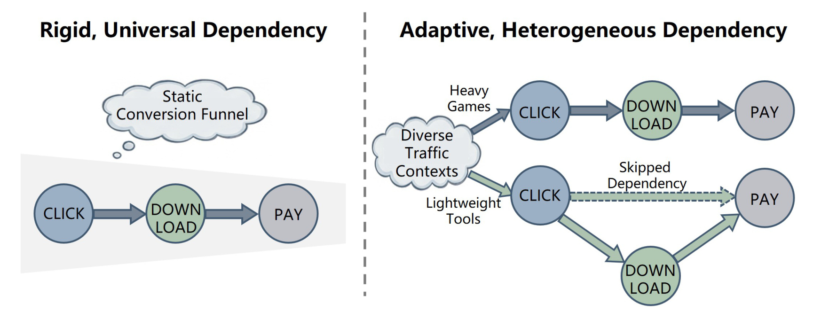
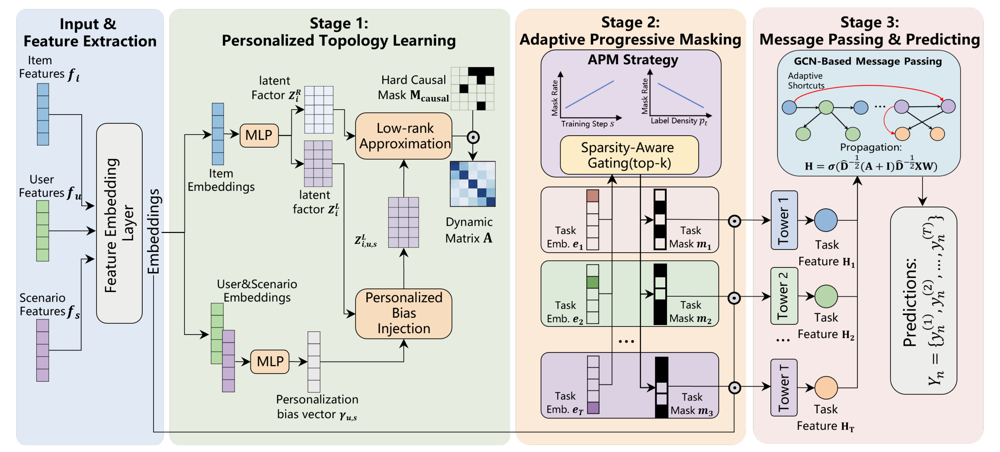
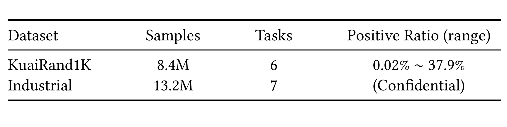
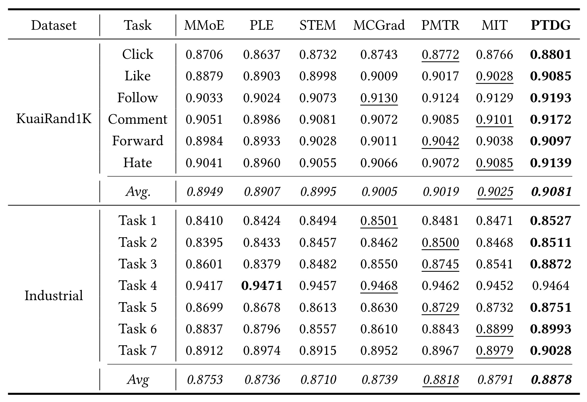
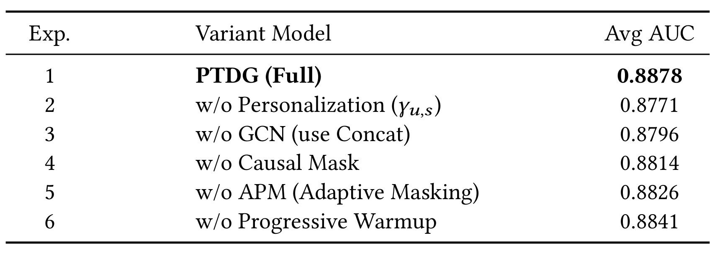

华为 PTDG：用个性化任务依赖图缓解多任务推荐的信号衰减
《Personalized Task Dependency Graphs for Mitigating Signal Erosion in Multi-Task Recommendation》研究多目标转化预估：怎样让任务间的信息传递随物品、用户和场景变化，同时保护稀疏转化目标。作者为 Fuyuan Liu、Tiandeng Wu 等，第一作者及全文列出的机构为 Huawei Technologies；Liu 与 Wu 为共同第一作者，Wu 为通讯作者。论文于 2026 年 9 月 4 日提交 arXiv v1，文内标注 CIKM ’26，全文 5 页。唯一论文入口：arXiv:2609.04862。本轮未核验到独立代码或项目页；下文数字均是作者报告及基于原表的复算，不代表独立复现。
现有多任务方法常在静态转化漏斗中对不同样本施加一致的依赖强度，忽略任务相关性随物品特征而变化。固定链条上的层级消息传递会累积削弱信号，使稀疏的深层转化目标更难学好。
1. 背景和问题
工业推荐同时预测多种行为，并不只是为了增加几个离线指标。论文以应用分发为背景，从点击、下载到付费，平台希望兼顾浅层互动和深层商业结果。点击样本相对密集，付费信号更少；只优化点击未必改善最终收益，直接单独训练付费目标又可能缺乏足够监督。多任务学习因此把多个目标放进同一个系统，通过共享表征借用其他任务的信息。本文要调整的是这个共享系统内部的任务连接方式，而不是重新定义一次曝光、点击或付费的标签，也不是提出新的广告竞价公式。其业务动机是提高包括 eCPM 在内的整体表现，具体学习任务仍然是多组二分类概率预估。
在论文讨论的现有路线中，MMoE 通过多门控专家进行表示共享，PLE 区分共享和任务专属表征，AITM 沿多步转化链传递信息；其他工作则从梯度加权、动量校准或任务层级入手。共享强度、梯度冲突和行为先后关系分别对应不同问题，不能混为一谈。即使一组损失权重已经调得合理，也不说明“哪些任务该向哪些任务传信息”已经合理；即使物理流程有固定顺序，也不说明所有物品都应使用同样的边强度。PTDG 的论证由此展开：一个统一的漏斗可以是合理的业务约束，却仍然是过强的统计归纳偏置。

Figure 1 左侧将所有样本放进同一条 Click、Download、Pay 链；右侧区分重度游戏和轻量工具。游戏示意强调连续的点击、下载、付费通路，工具示意则出现点击到付费的直接虚线依赖，同时仍画出经下载的路径。图中没有纵横坐标、性能数值或样本占比，它是问题定义图：用不同箭头结构说明同一组任务节点之间可能需要不同的信息通路。这里的“跳过”首先应理解成模型传播不必强制经过每个中间表征，不能据此声称某平台所有工具都能绕开真实安装流程付费。原文用这个业务例子解释异质性，并未提供按品类统计的真实跳转频率或因果效应量。
图中最有用的区分是行为顺序约束与依赖强度可以同时存在。禁止付款信息反向流向点击预测，是设计者施加的方向限制；允许某个合法方向在一个物品上强、另一个物品上弱，是模型的自由度。若只看到右侧多了一根箭头，就把 PTDG 理解为“给网络增加一条残差连接”，会漏掉其按实例生成关系矩阵的部分。反过来，若把箭头称为已经发现的真实因果边，又超过了图和后续实验的证据。全文没有干预实验来识别任务间的因果效应，图提供的是架构假设，后文的 AUC 和业务指标才用来检验这种假设是否改善预测。
所谓信号衰减，是作者对固定层级链的一种诊断：越靠后的目标越依赖连续的中间变换，来自其他任务的有效信息可能在多次传递中减弱。对正例已经很少的深层目标，这会叠加监督稀疏性；某些中间任务还可能对当前物品并不重要。PTDG 希望缩短有用信息的传播路径，并用个性化强度降低不必要的信息混合。需要注意，本文没有直接测量每一层的信号幅值、梯度信噪比或信息保真度。因此“缓解信号衰减”是由结果与结构消融间接支持的机制解释，不是已经由内部表征诊断完全证明的定律。
与此同时，让所有任务充分共享参数又可能产生负迁移。一个高频目标提供大量更新，低频目标的优化方向未必一致；单纯重配损失权重只能调整数值尺度，不能改变哪些参数被哪些任务更新。作者因此把结构优化拆成两层：任务图控制任务表征之间的信息传递，APM 控制任务可见的共享参数子集。两者作用对象不同，前者关心节点与边，后者关心参数与任务。理解这个分工后，才不会把“因果掩码”和“参数掩码”当成同一个矩阵，也不会把个性化图的收益全部归因于任务稀疏率加权。
本文与推荐排序的关系很直接：它服务于多目标打分模型，用户、物品、场景特征是联合输入，最终仍输出每个目标的预测概率。其新意集中在模型内部，理论上不要求外部召回或排序策略重写，但原文没有证明可无成本移植到任何既有系统。数据中只有六或七个任务，物理顺序和稀疏模式也依赖具体业务。对于任务很多、目标之间缺少顺序、或特征本来已经强烈个性化的系统，PTDG 是否仍有相同收益，需要额外实验。把这些条件说清楚，比直接将其列为通用 MTL 替代方案更符合论文证据。
在阅读相关工作时，还应区分本文与整个样本空间建模的关系。引言提到 ESMM、ESCM2 处理选择偏差，AITM 和 HTLNet 处理转化路径，PTDG 则强调路径强度的实例差异。这些是作者对邻近路线的定位，并不是本文已证明自己同时解决所有这些问题。特别是只观察点击后转化造成的样本选择问题，不会因为任务节点之间增加一条边而自然消失；本文没有给出反事实估计目标或新的偏差校正公式。若原系统已有全空间训练逻辑，应明确图传播是要替换表示交互层，还是同时改变监督空间，二者的实验影响不能混在一次替换里。
从研究问题的可证伪性看，PTDG 给出的切入口相当具体：固定关系不够好，则去掉用户场景调制应当明显退化；图传播比拼接更适合任务信息，则 Concat 替代应当降低性能；稀疏目标需要更少共享干扰，则取消 APM 应当带来损失。原文确实安排了这三类消融，但没有对每一种品类分别画关系图，也未展示某个用户场景下边权如何变化。因此，读者能检查的是模块是否有用，暂时还不能沿一个具体样本从业务原因追踪到某条边、再追踪到一次预测改善。这是本文短篇设计留下的解释性空白。
2. 方法
2.1 个性化任务依赖图
论文 §3.1 将每条样本写成物品、用户、场景特征三元组，同时有多个转化目标标签。§3.2 首先用物品 embedding 产生两组低秩因子，再由用户与场景特征调制其中一组。这样，同一物品拥有一份依赖结构基础，而不同用户、场景可以在其上产生不同强度。其核心并不是为每条样本无约束预测完整矩阵，而是通过少量潜在维度限制关系的自由度。原文给出的基础图和个性化调制分别对应式（1）与式（2）：
符号解释：$T$ 是任务数，$q$ 是低秩维度，$Z_i^L$ 与 $Z_i^R$ 分别是物品 $i$ 的左、右潜在因子，转置符号 $\top$ 将右因子变成 $q\times T$，相乘得到任务间的 $T\times T$ 关系矩阵。左右因子可以不同，所以关系不必对称。作者称两组因子可由 DeepFM 或 MLP 等骨干从物品 embedding 提取；低秩约束减少结构自由度，被用作稀疏工业数据上的正则化。这里学到的是可用于传播的任务关系表示，不能把任意矩阵元素直接解释成有单位的行为转化率。
符号解释：$\gamma_{u,s}\in\mathbb{R}^{q}$ 是用户 $u$ 和场景 $s$ 的特征经过 MLP 产生的向量，$\mathbf{1}_T$ 是全一列向量，$\otimes$ 为外积，$\odot$ 为逐元素乘法。广播后，每个任务行上的潜在维度受到同一组上下文系数调制，但不同任务的左因子原本不同，最终边强度仍可分别变化。“偏置注入”在式（2）中实际是乘性调制，并非直接加上一个偏置矩阵。 物品结构与用户场景调制的分工保留到推理阶段，因此图本身仍依赖当前请求；它与训练结束后固定的参数掩码有本质区别。

Figure 2 从左到右把完整数据流连接起来。左端分别输入物品、用户、场景特征，进入 embedding 层；绿色区域中，物品侧 MLP 输出两组因子，用户与场景侧 MLP 输出个性化向量，再经低秩组合和硬约束得到动态任务矩阵。橙色区域引入任务 embedding 和 Top-k 门控，令不同任务看见不同共享参数；右侧每个任务 tower 得到节点特征，GCN 根据关系矩阵交换信息，最后输出多个概率。图中两根红色弧线表示可绕过冗余中间节点的自适应捷径，并不是跳过输入特征处理或直接复制标签。顶部两幅小折线只展示掩码率随训练步数增加、随正例密度降低而增大的设计关系，没有给出实测曲线，因此不能将其当成超参数敏感性实验图。
这幅结构图也解释了为什么 PTDG 同时需要两种掩码。拓扑侧的硬约束作用于任务边，防止不符合预设顺序的信息回流；APM 侧的黑白掩码作用于共享参数可见性，缓解任务间更新冲突。一个任务即使只保留部分共享参数，也仍可通过合法图边接收其他任务表征，因此“少共享参数”不等于“任务完全隔离”。作者把两部分放在同一训练系统中共同优化，但没有公开每个 tower 的完整层宽、门控梯度实现和掩码粒度，图所支持的是模块关系和张量路径，不是可直接运行的工程实现。看图复现时必须回到公式和这些缺失边界，尤其不能拿绘制顺序替代训练时的具体反向传播规则。
2.2 硬约束下的图传播
生成动态关系后，作者先以硬掩码删除违反先验行为顺序的方向，再给图加自环，用归一化邻接进行消息传递。原文式（3）与式（4）如下，式（5）随后从各节点表示产生任务概率。相比固定链条，合法的直接边允许目标从更近的相关节点获取信息；自环则让节点自己的表征同时进入聚合。硬约束限制的是模型的信息流，论文没有证明它能识别真实因果结构。 尤其在观测数据中，相关性、采样偏差与业务流程混杂仍可能共同影响关系矩阵。
符号解释：$M_{\mathrm{causal}}$ 是预设硬约束矩阵，$A$ 为裁剪后的关系；$I$ 是 $T\times T$ 单位矩阵，$\widehat D$ 为 $A+I$ 的度矩阵，$X$ 是原始任务节点特征，$W$ 是可学习变换，$\sigma$ 是非线性函数，$H$ 是传播后的节点表示。归一化的意图是控制不同连接规模下的聚合强度，自环保留任务自身信息。原文没有充分交代有向边的行列约定、负边权是否受到约束以及度矩阵的数值保护；因此不能自行假定这里使用 softmax 非负化或特定的加常数技巧。任意硬掩码还可能改变低秩矩阵的秩，因子约束与最终图的计算性质应分别核查。
符号解释：$h_t$ 是 $H$ 中任务 $t$ 的节点表示，任务输出头 MLP 将其转换成标量 logit，Sigmoid 把 logit 映射到零到一之间，得到预测概率 $\widehat y_t$。整个过程仍是监督预估：推理时输入特征先产生节点和动态图，经过传播后得到各任务概率，不需要访问该请求尚未发生的标签。原文将结果称为转化预测，却没有在这里把概率连乘成条件漏斗，也没有给出额外的概率单调约束。因此，顺序掩码不能自动保证所有任务输出在数值上满足“下游概率小于上游概率”等业务一致性条件；若服务依赖这些条件，需要另行验证。
2.3 损失归一化与渐进参数掩码
§3.3 用每个任务的二元交叉熵训练输出，再用历史损失的指数滑动平均统一不同任务的尺度。§3.4 的 APM 进一步改变参数共享结构，两者不是互斥方案。数值重加权让不同任务的 loss 更可比较；结构掩码则避免所有目标在完全相同的参数集合上相互干扰。为避免原文同一个 $s$ 同时表示场景与训练步数引起混淆，以下损失公式中的 $s$ 专指训练步数，个性化图中的 $s$ 仍是场景索引。原文式（6）与式（7）为：
符号解释：$y_t$ 是监督标签，$\widehat y_{t,s}$ 是当前预测，$\mathcal L_{t,s}$ 是该任务损失，$\widehat{\mathcal L}_{t,s}$ 是其 EMA，$\alpha$ 控制新观测的权重，$\beta_{t,s}$ 是乘到当前损失上的缩放系数。论文取 $\alpha=0.1$。这个目标等价于把当前 loss 按自己的历史尺度归一化，不能据此说它显式优化了业务收益或直接消除了所有梯度夹角冲突。EMA 初始化、分母趋近零时的保护、权重是否停止梯度，短文没有交代，复现时要作为实现问题保留。接下来 APM 从任务 embedding 得到门控值，并保留排名靠前的若干参数位置，原文式（8）为：
符号解释：$e_t$ 为任务 embedding，$w_t$ 是门控输出，$j$ 是参数位置，$\mathbb I$ 是指示函数，$k_t$ 是保留数量，$m_t$ 是二值参数掩码；rank 表示按门控重要性从前到后的次序。掩码与共享参数逐元素相乘，让每个任务只使用所选部分。论文将此称为结构性解耦，但 Top-k 的离散选择如何获得训练梯度没有详细给出，不能擅自声称使用了直通估计器。任务正例率决定最终掩码率，训练步数决定逐步接近这个目标的速度。稀疏任务最终屏蔽更多共享参数，是减少干扰的设计选择，而不是给稀疏任务增加更多参数容量。对应式（9）与式（10）：
符号解释：$p_t$ 是任务正例率，$p_{\min}$、$p_{\max}$ 是任务间最小和最大正例率；$r_{\min}$、$r_{\max}$ 是掩码率边界，$d$ 是共享参数数量，$S_{\mathrm{warm}}$ 是最大预热步数，$k_{t,s}$ 是当前保留数量。最低正例率对应最高目标屏蔽率，最高正例率对应最低屏蔽率；训练开始时保留全部共享参数，然后线性减少直至目标。原文设置屏蔽率边界为 0.2 与 0.7，即最终保留比例在 80% 与 30% 之间。如何取整以及所有任务正例率相等时如何避免零分母，原文未说明。作者称训练后掩码固定，故 APM 没有额外推理开销；但动态图与 GCN 依然执行，不能把这一说法扩大为整个 PTDG 零开销。
3. 实验结果
3.1 数据规模、训练条件与可复现范围
作者在公开 KuaiRand1K 和一个工业数据集上比较多任务 AUC。Table 1 给出两个环境最基本的规模差异，理解主结果前应先看稀疏程度和任务数量：这决定了模型到底在什么规模的任务图上被验证，以及稀疏任务的说法有哪些公开依据。

Table 1 的行是两个数据集，列分别是样本数、任务数、正例率范围。KuaiRand1K 使用 8.4M 样本、六个任务，正例率从 0.02% 到 37.9%，最大与最小相差约 1895 倍；这个范围足以说明不同目标的监督密度极不均衡，但表中没有把每个正例率映射到具体任务。工业数据使用 13.2M 样本、七个任务，正例率保密，所以读者不能自己验证某个匿名任务究竟有多稀疏。本文后续将 Task 3 称为稀疏任务、Task 6 称为关键深层目标，应标记为作者的任务说明，不能由表中 AUC 大小倒推标签密度。AUC 高低与正例率不是一一对应关系。
两行数据支持的是“小任务数、多样本、多监督密度”的验证范围。公开数据的六个任务名称在主结果表可见，包括点击、点赞、关注、评论、转发和负反馈；它们并非都构成一条严格顺序漏斗。论文没有详细列出针对这个数据集的硬约束矩阵，这限制了外部实现者重建作者设置。工业数据提供了更接近商业目标的背景，却隐藏任务语义和分布细节，因此跨数据集一致方向可以增强经验可信度，仍不能替代精确复现配置。本文没有另列预处理、按时间切分和标签观察窗口的完整表格，不能擅自补成通用的八二划分或随机切分。
训练条件在 §4.1 写得相对明确：Adam 学习率 0.001，dropout 0.1，batch size 2048，低秩维度 2，EMA 系数 0.1，单张 NVIDIA Tesla V100；每个设置用 20 个随机种子重复。基线包括 MMoE、PLE、STEM、MoCoGrad、PMTRec 和 MIT，表头把 MoCoGrad 缩写成 MCGrad、PMTRec 写成 PMTR。作者表示基线参数遵从各自原论文，但没有公开完整调参预算或逐模型训练时长。尤其值得警惕的是，实现段写“warm-up 使用 $p_{\min}=500$、$p_{\max}=2000$”，而公式中这两个符号明确定义为正例率，范围显然不匹配。这里保留为原文符号冲突，不能直接把 2000 当作已经核验的 $S_{\mathrm{warm}}$。
3.2 主结果与相对涨幅复算
主表逐任务列出七个模型的 AUC，最后给出简单任务平均值。所有值均是 20 次运行的均值，粗体标最佳、下划线标次佳；表内没有同时给出标准差或置信区间。读表时，先比较同一任务的模型，再比较平均表现，避免把不同任务的 AUC 差异解释为商业价值差异。

Table 2 中，KuaiRand1K 的 PTDG 平均 AUC 为 0.9081，对比最佳基线 MIT 的 0.9025，绝对差为 0.0056，也就是按百分数表达 AUC 时增加 0.56 个百分点；相对增幅约为 0.62%。PTDG 在公开数据六个任务均取得表内最高均值。工业数据平均 AUC 为 0.8878，最佳基线 PMTRec 为 0.8818，绝对差 0.0060，约 0.68% 相对提高。平均值是跨任务算术平均，不能直接等同于样本加权排序收益，更不能把它当成线上 CVR 或 eCPM。两个数据集最强基线并不相同，也说明选一个较弱基线概括全部提升会夸大读者对增益规模的印象。
摘要中最醒目的“稀疏目标最高提升 1.45%”，在工业 Task 3 上可以直接复算：PMTRec 为 0.8745，PTDG 为 0.8872，二者相减是 0.0127；用这个差除以 0.8745 得到约 1.452%。所以它是相对 AUC 提升约 1.45%，对应绝对 AUC 增加 0.0127，即 1.27 个百分点，并不是增加 1.45 个百分点。工业 Task 6 相对 MIT 从 0.8899 到 0.8993，差 0.0094，相对约 1.056%；这支持原文约 1.05% 的表述。KuaiRand1K 的 Follow 相对 MMoE 从 0.9033 到 0.9193，约提高 1.77%，但该任务更强的 MoCoGrad 基线为 0.9130，对它的相对提升只有约 0.69%。基线必须随数字一起保留。
工业 Task 4 是需要主动保留的反例：PTDG 为 0.9464，PLE 为 0.9471，MoCoGrad 为 0.9468，PTDG 没有在所有目标上胜出。作者将该任务描述为较密集的浅层点击任务，并称性能可比；这与“收益主要在更难的转化目标”方向相容。但没有公开置信区间，就不能由相差 0.0007 的均值自行判定统计显著与否，也不能把“可比”改写成“完全无损”。更严谨的判断是：本文在两个环境的平均表现领先，在一个工业任务上略低于最强基线，深层任务中的较大提升构成主要亮点。
在商业目标上，AUC 衡量的是正负样本的排序区分能力，它并没有验证概率校准、特定阈值决策质量或收益加权效果。论文用 AUC 做离线比较是明确的评估口径，但未报告 logloss、校准误差或不同流量分层表现。20 次运行能够降低单一随机种子的偶然性，却不能解决训练测试切分不透明、品类异质性证据不充分的问题。因此，从 Table 2 最稳妥的结论是结构组合带来了可见的平均判别性能改善；“信号衰减被直接测量并消除”仍超出这张表能证明的范围。
3.3 消融、敏感性与计算代价
作者在工业数据中分别移除个性化调制、GCN、硬约束、APM 和渐进预热，比较平均 AUC。这个设计把方法拆成相对独立的部件，能够检验每个部件在完整系统中的增量价值；但一次移除一个部件并不能完全识别所有交互作用。

Table 3 的完整模型平均 AUC 是 0.8878。去掉用户场景个性化向量后降到 0.8771，绝对下降 0.0107，相对完整模型约下降 1.21%，是表内最大的下降。把 GCN 换成 Concat 后为 0.8796，差 0.0082，相对下降约 0.92%；去掉硬约束后为 0.8814，差 0.0064；去掉 APM 后为 0.8826，差 0.0052；保留掩码但去掉预热时为 0.8841，差 0.0037。这些结果共同支持个性化关系、图传播和渐进参数共享在作者设置中都有帮助。原文把移除 GCN 的下降写为 0.93%，根据表中四位小数复算约为 0.924%，微小差异可能来自未展示的小数精度，不能据此编造更精确原始值。
消融中最强的证据是结构组合对预测结果有贡献，最弱的环节是机制解释尚缺直接诊断。例如移除 APM 变差并不自动证明所有梯度冲突已被结构性解决，因为表没有报告梯度夹角分布；移除硬约束变差也不等同于硬约束识别了因果边。Concat 的替换还可能改变参数量或有效模型容量，文内没有逐变体参数量对照。同样，移除个性化对应的是去掉 $\gamma_{u,s}$，不能扩大解释成完全去掉物品基础图。对工程验证的实际启发是先按这些部件做可对照实验，再补充参数匹配、任务梯度与边权分布诊断，确认收益来源是否与作者解释一致。
§4.4 只用文字报告敏感性：低秩维度从 1 到 7 扫描，2 最好，继续增大后退化；掩码率扫描零到 0.9，最优边界为密集目标 0.2、稀疏目标 0.7。文中没有相应曲线或完整搜索表，因此不能重画一条“平滑下降”的趋势线，也无法量化不同超参数的性能落差。作者提出约为任务数三分之一的经验值，但验证只涉及六、七任务，小规模观察不足以推出任意任务数的通用比例。相较于追随该经验比例，复现时更需要重新验证任务集合与稀疏分布改变后最优秩是否移动。
§3.5 声称低秩表示使邻接和消息传播对任务数保持线性，并称线上相对 MMoE 增加 8 ms 端到端延迟、仍在 SLA 内。应把表示规模、理论操作量和实测延迟分开：两个因子只需要与 $Tq$ 同阶的元素，但显式形成 $T\times T$ 邻接，再施加任意逐元素硬掩码，并不会仅因因子低秩就自动变为线性。无掩码时可通过矩阵乘法结合顺序避免显式形成完整邻接，任意掩码后如何维持这一性质，短文没有展开。8 ms 则是作者部署环境的观察，没有给出延迟分位数、基线总时延或并发负载，不能推广成所有平台固定增加 8 ms。
3.4 线上两周验证及其统计边界
作者在一个日活超过一亿的主流应用分发平台部署 PTDG 作为排序模型，进行两周 A/B 测试。基线为当时线上使用的 MMoE，并声明与离线表中的 MMoE 是同一架构。基线桶占 10% 流量，实验桶占 10%，另外 80% 保留原生产模型。结果报告 CVR 相对提升 1.2%，eCPM 相对提升 1.9%。这两个比例都是相对基线的业务指标变化，不是百分点变化，也不是所有用户收入都提高了相同幅度；论文没有给出桶级绝对 CVR、eCPM 基线数值，因此无法换算绝对增量。
显著性程序是按天聚合各桶指标，然后使用双样本 t 检验，阈值为 $p<0.05$。这比只有“线上有提升”的一句话更完整，但没有披露每项指标精确 p 值、每日序列、置信区间、分桶稳定性以及序列相关性处理。读者可以如实记录“作者报告达到该显著性阈值”，不能改写成已经独立核实统计结论。两周覆盖短期运行，也不回答长期用户习惯变化、新物品冷启动和品类分布漂移后的效果。对本篇价值的判断，应把这份真实部署证据视为支持可行性的额外一层，同时保留其有限观察周期和不可公开复算的边界。
4. 总结
我的判断是，PTDG 值得作为多目标排序架构的候选实验，特别适合已有明确行为约束、目标密度差异很大、又怀疑统一任务传递链过于僵硬的环境。它把物品级结构、用户场景调制和任务级参数可见性拆开，给出了比单纯改任务权重更具体的干预位置。最有说服力的证据是两个数据集的平均 AUC 领先、工业消融方向一致，以及两周线上指标正向；最需要克制的地方是从这些结果反推“信号衰减和梯度冲突已经被彻底解释”。目前更适合把它看作有工业验证的架构假设，而非一套已经完全公开、能直接复现的算法工程包。
局限至少有四个层面。第一，匿名工业任务的语义和正例率保密，难以验证收益是否真正集中在最稀疏目标，以及品类异质性是否驱动了图个性化收益。第二，Top-k 梯度、硬约束矩阵、有向归一化和 EMA 数值保护未完整说明，预热符号还发生冲突，复现者可能实现出多个彼此不同的版本。第三，低秩计算复杂度的论述没有处理任意掩码后的细节，当前六七任务规模无法支撑大规模扩展的强结论。第四，离线缺少方差、线上缺少每日原始序列和置信区间，既不能独立复算显著性，也无法清楚区分稳定小收益与特定时间窗口收益。
还有一个容易忽视的边界：本文没有直接回答概率校准和目标输出一致性。任务图满足先验方向，并不意味着输出概率满足所有业务约束；平均 AUC 上升也不保证每个目标和每个用户分层都获益。工业 Task 4 的均值略低于 PLE，就是值得留下的负向信息。若把这个框架搬到新的业务，先确认目标定义、标签延迟和样本空间，再看图连接是否有意义，会比一开始围绕 1.45% 这个数字设收益预期更可靠。
实际阅读优先级上，我会先消化个性化因子调制和双重掩码的区别，再考虑复用完整结构。前者有明确公式，适合作为可检查的研究单元；后者涉及离散选择和优化路径，必须拿到更多实现证据。线上相对收益为研究价值提供支持，却不应成为预设验收目标，因为新平台的漏斗、目标密度和既有基线都可能不同。一个合理的起点是只检验当前系统是否真的存在统一关系强度造成的损失：若分场景图没有优于固定图，继续叠加 APM 只会让问题更难归因。
后续我会优先跟进三件事：其一，寻找作者释放的代码或更长版本，确认预热符号、门控训练与图归一化，避免把文本空缺靠猜测填满；其二，在自身数据上比较固定图、仅物品图、用户场景调制图，并记录任务正例率与分层增益，直接验证“异质性”这个核心前提；其三，把 APM 与相同容量的任务专属参数方案、损失归一化方案分开对照，同时测量梯度冲突和服务延迟分位数。这样才能判断收益来自更合适的信息通路、减少参数干扰，还是单纯容量与训练调参变化。若这些证据成立，再扩大任务数和观察周期，才有基础讨论是否进入生产长期方案。